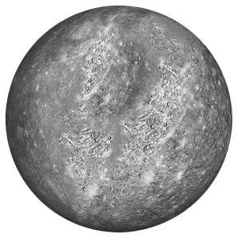
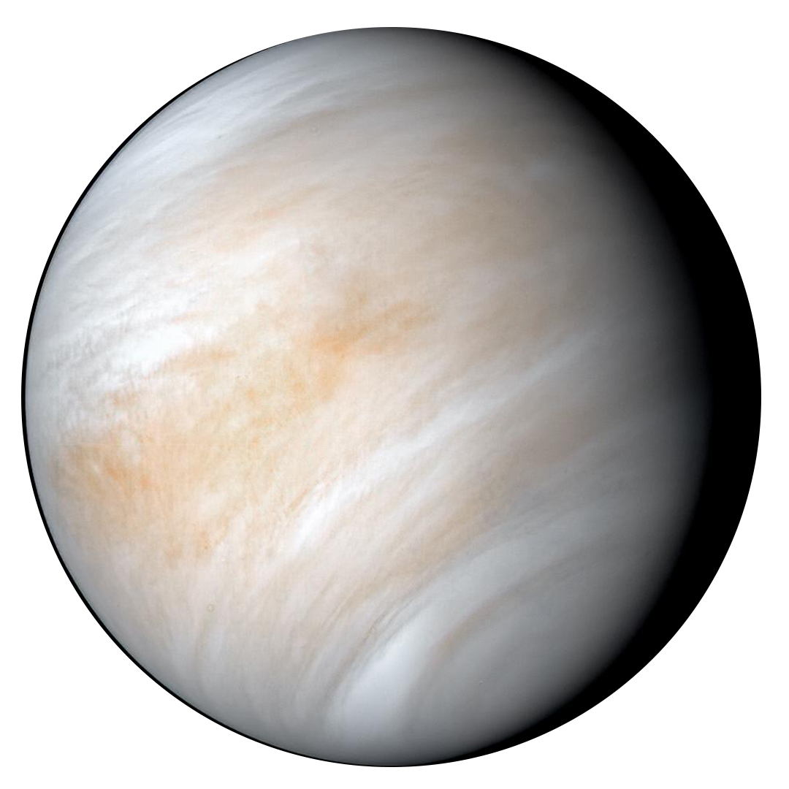
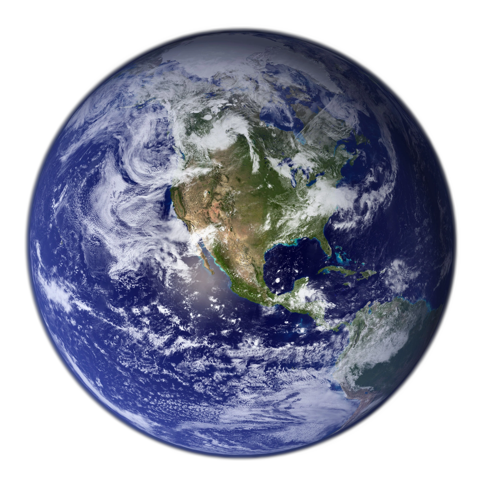
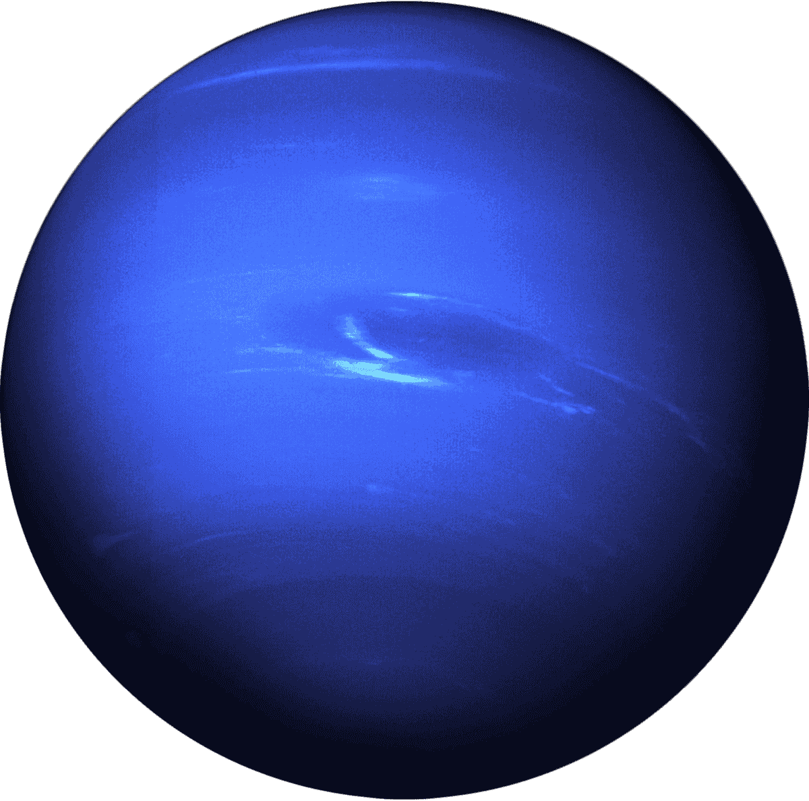

Discovering Our Cosmic Neighborhood

The Solar System is the gravitationally bound system of the Sun and the objects that orbit it. It formed 4.6 billion years ago from the gravitational collapse of a giant interstellar molecular cloud. The vast majority of the system's mass is contained in the Sun, with the majority of the remaining mass contained in Jupiter.
"To confine our attention to terrestrial matters would be to limit the human spirit." - Stephen Hawking
Key Components of the Solar System
Here are the fundamental bodies in our system:
- The Sun (Sol), our star.
- Eight major planets.
- Dwarf planets like Pluto and Ceres.
- Numerous moons, asteroids, and comets.
The Eight Major Planets
Mercury

Mercury is the smallest planet and closest to the Sun. It has a very short orbit, aking only 88 Earth days to complete one revolution.
Venus

Venus is the second planet from the Sun. It is the hottest planet, thanks to a thick, toxic atmosphere that traps heat in a runaway greenhouse effect.
Earth

Our home planet, the third from the Sun. It is the only known celestial body to harbor life, covered mostly by water.
Mars

Mars is the fourth planet, known as the Red Planet. Scientists continue to explore it for signs of past or present microbial life.
Jupiter

Jupiter is the largest planet in the Solar System, a gas giant known for its Great Red Spot, a persistent storm larger than Earth.
Saturn

The second-largest planet, famous for its magnificent ring system, which is mainly composed of chunks of ice and rock.
Uranus

Uranus is an ice giant unique for rotating on its side. It is the seventh planet from the Sun and is covered by a featureless blue-green haze.
Neptune

The eight and farthest known planet from the Sun. It is an ice giant, known for having the strongest winds in the Solar System.
Planetary Weight Converter (HTML JavaScript Demo)
Did you know your weight changes drastically depending on the gravity of the celestial body you're on? Use this converter to find out what your weight would be on another planet!
Click "Calculate Weight" to see your cosmic weight!
Key Planetary Data Comparison
| Planet | Type | Distance (AU) | Major Moons |
| Mercury | Terrestrial | 0.4 AU | 0 |
| Earth | Terrestrial | 1.0 AU | 1 (The Moon) |
| Jupiter | Gas Giant | 5.2 AU | 95+ |
Fun Facts About the Planets
- "Venus is hotter than Mercury, even though it's farther from the Sun, because of its thick atmosphere!"
- "Jupiter's Great Red Spot is a giant storm that has been raging for over 300 years and is larger than Earth!"
- "Mars has seasons similar to Earth's due to its axial tilt, but they are twice as long!"
- "A year on Neptune lasts 165 Earth years, so it hasn't completed one full orbit since its discovery!"
- "Saturn's rings are mostly made up of pieces of ice and rock, some of which are bigger than a house."
- "Saturn's rings are mostly made up of pieces of ice and rock, some of which are bigger than a house."
- "There is ice on Mercury, but only in craters that never receive sunlight!"
- "Uranus rolls on its side on its axis, likely due to an ancient collision."